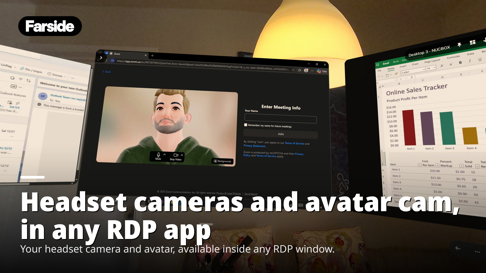
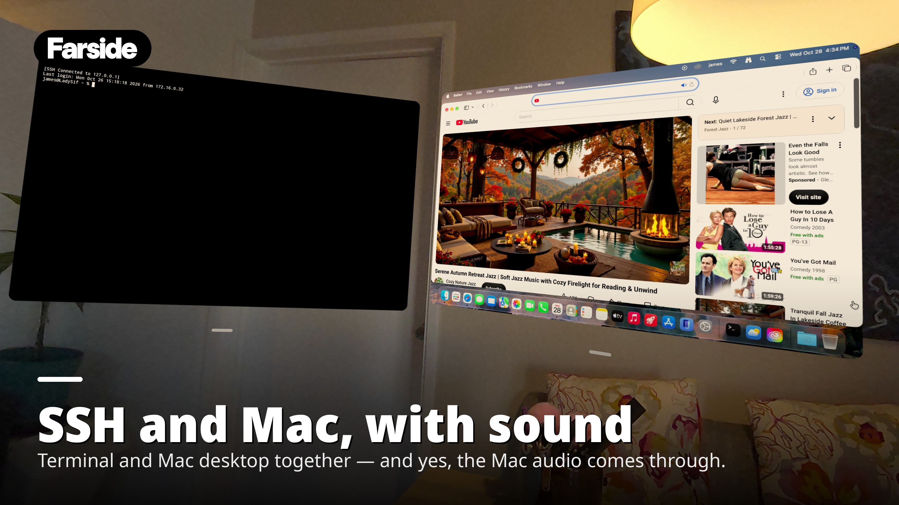
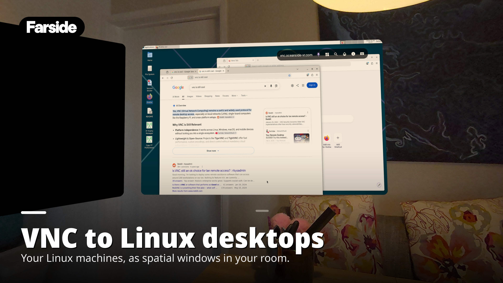
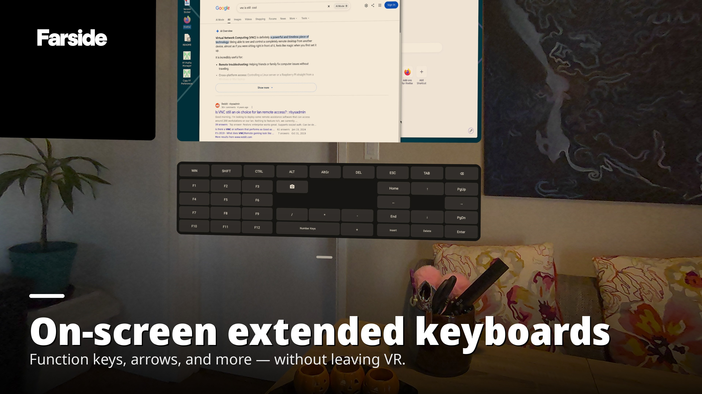
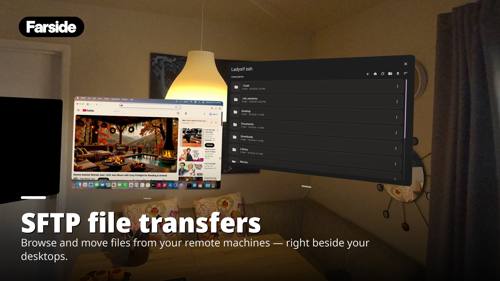

Farside Workspace
Remote systems, in your space.
Farside brings remote desktop access and terminal sessions into your AR workspace on Meta Quest. Connect through RDP, VNC, and SSH to work with your computers and servers using one professional tool.
Open a graphical desktop when you need the full interface, or use SSH when the command line is the right tool for the job. Farside is built for developers, system administrators, and IT professionals who want their remote systems within reach.
In development
Trailer
Branded screenshots with transitions, followed by the two demo videos. 63 seconds, no audible sound.
Gallery
In order: RDP first, SFTP last.





Demo videos
Separate clips, no audio track.